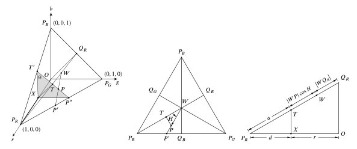

HSI和RGB颜色的相互转换从定义上来看,是直观明了的,但数学的推导却是繁琐的.
从RGB到HSI的转换
RGB模型是根据单位立方体定义的.然而, HSI模型的颜色分量(色相和饱和度)是根据图1(a)所示的颜色三角形来定义的.在图1(a)中,注意到色点\(P\)的色调\(H\)是所示矢量相对于红原色轴的角度.因此,当 \(H=0^{\circ}\) 时,颜色为红色.当 \(H\) 为 \(60^{\circ}\) 时,颜色为黄色,以此类推.色点 \(P\) 的饱和度 \(S\) 是颜色未被白色稀释的程度,与 \(P\) 到三角形中心的距离成正比. \(P\) 距离三角形中心越远,它的颜色越饱和.
图 1(a) 图 1(b)
在HSI模型中,强度是根据一条垂直于三角形并通过其中心的线来测量的.沿着三角形下面这条线的强度趋于从暗到黑.相反,在三角形以上的强度则从亮到白.
在三维色彩空间中结合色相、饱和度和强度可以得到图1(b)所示的三面金字塔状结构.这个结构表面的任何一点都代表了一种纯饱和的颜色.该颜色的色调取决于它相对于红原色轴的角度,其强度取决于它与黑色点的垂直距离(也就是说,与黑色的距离越大,该颜色的强度越大).类似的结论也适用于结构内部的点,唯一的区别是颜色在接近垂直轴时变得不那么饱和.
HSI模型中的颜色是根据归一化后的红色、绿色和蓝色值定义的，以RGB原色给出 \[ r=\frac{R}{R+G+B}\,,\tag{1} \]
\[ g=\frac{G}{R+G+B}\,,\tag{2} \]
\[ b=\frac{B}{R+G+B}\,,\tag{3} \]
故 \(r,g,b\in [0,1]\),且 \[ r+g+b=1\,.\tag{4} \] 注意, 虽然 \(R,G\) 和 \(B\) 能同时达到最大值,但归一化值仍满足式 \((4)\).事实上,这个方程的平面包含了HSI三角形.
图 2(a) 图 2(b) 图 2(c)
对于任意的 \(R,G\) 和 \(B\) 分量,每一个在范围 \([0,1]\) 内, HSI的强度分量定义为 \[ I=\frac{1}{3}(R+G+B)\,,\tag{5} \] 其值在 \([0,1]\) 范围内.
下一步是获得 \(H\) 和 \(S\) 分量,为了从图2的几何约束中得到 \(H\),我们作如下条件说明:
(a) 点 \(W\) 的坐标为 \((1\,/\,3,1\,/\,3,1\,/\,3)\);
(b) 任一点 \(P\) 的坐标为 \((r,g,b)\),且被约束在以 \(\triangle P_RP_GP_B\) 为边界的平面内;
(c) 从原点到 \(W\) 的向量记为 \(\boldsymbol{w}\).类似地,从原点到点 \(P_R\) 和 \(P\) 的向量分别记为 \(\boldsymbol{p}_R\) 和 \(\boldsymbol{p}\);
(d) 直线 \(P_iQ_i\), \(i=R,G,B\),交于点 \(W\);
(e) 令 \(r_0=R\,/\,I,g_0=G\,/\,I,b_0=B\,/\,I\),其中 \(I\) 在式 \((5)\) 中给出,从图2(a)可以看出, \(P_RQ_R\) 是点 \((r_0,g_0,b_0)\) 满足 \(g_0=b_0\) 的轨迹.同理,沿着 \(P_B Q_B\) 有 \(r_0=g_0\),沿着 \(P_G Q_G\) 有 \(r_0=b_0\);
(f) 在以 \(\triangle P_RQ_RP_G\) 为边界的平面区域内,任意点都满足 \(g_0\geqslant b_0\).在 \(\triangle P_RQ_RP_B\) 区域范围内的任意点都满足 \(b_0\geqslant g_0\).因此,直线 \(P_RQ_R\) 将 \(g_0 > b_0\) 的区域与 \(g_0 <b_0\) 的区域分开.同理,直线 \(P_GQ_G\) 将 \(b_0 > r_0\) 的区域与 \(b_0 <r_0\) 的区域分开,直线 \(P_BQ_B\) 将 \(g_0 > r_0\) 的区域与 \(g_0 <r_0\) 的区域分开;
(g) 对于 \(i=R,G\) 或 \(B\), \(\left|W Q_{i}\right| \,/\,\left|P_{i} Q_{i}\right|=1 \,/\, 3\) 且 \(\left|W P_{i}\right| \,/\,\left|P_{i} Q_{i}\right|=2 \,/\, 3\) (\(|\cdot|\)代表长度);
(h) \(RG\) 扇区定义为以 \(\triangle WP_RP_G\) 为边界的区域, \(GB\) 扇区定义为以 \(\triangle WP_GP_B\) 为边界的区域, \(BR\) 扇区定义为以 \(\triangle WP_BP_R\) 为边界的区域.
在图2(a)中,任意颜色的色调由线段 \(WP_R\) 与 \(WP\) 之间的夹角定义,矢量形式如图2(b)所示,由向量 \(\boldsymbol{p}_R -\boldsymbol{w}\) 与向量 \(\boldsymbol{p}-\boldsymbol{w}\) 之间的夹角定义.例如, \(H=0^{\circ}\) 对应红色, \(H=120^{\circ}\) 对应绿色,以此类推.尽管角 \(H\) 可以通过任意经过 \(W\) 的线来测量,但以红原色轴来测量色调是一种惯例.一般来说,下式适用于\(0^{\circ}\leqslant H \leqslant 180^{\circ}\): \[ \big(\boldsymbol{p}-\boldsymbol{w}\big) \cdot\left(\boldsymbol{p}_{R}-\boldsymbol{w}\right)=\big\|\boldsymbol{p}-\boldsymbol{w}\big\|\left\|\boldsymbol{p}_{R}-\boldsymbol{w}\right\| \cos H\,,\tag{6} \] 其中 \((\boldsymbol{x}) \cdot(\boldsymbol{y})=\boldsymbol{x}^{\mathrm{T}} \boldsymbol{y}=\|\boldsymbol{x}\|\|\boldsymbol{y}\| \cos H\) 表示两个向量的点积或内积, \(||\cdot ||\) 表示向量的范数(模).
根据条件(a)和(b), \[ \big\|\boldsymbol{p}-\boldsymbol{w}\big\|=\left[\left(r-\frac{1}{3}\right)^{2}+\left(g-\frac{1}{3}\right)^{2}+\left(b-\frac{1}{3}\right)^{2}\right]^{1 \,/\, 2}\,,\tag{7} \] 代入式 \((1)\)-\((3)\),得 \[ \big\|\boldsymbol{p}-\boldsymbol{w}\big\|=\left[\frac{9\left(R^{2}+G^{2}+B^{2}\right)-3(R+G+B)^{2}}{9(R+G+B)^{2}}\right]^{1 \,/ \,2}\,.\tag{8} \] 由于向量 \(\boldsymbol{p}_R\) 和 \(\boldsymbol{w}\) 各自从原点延伸到点 \((1,0,0)\) 和 \((1\,/\,3,1\,/\,3,1\,/\,3)\),故 \[ \left\|\boldsymbol{p}_{R}-\boldsymbol{w}\right\|=\left(\frac{2}{3}\right)^{1 \,/\, 2}\,,\tag{9} \] 故 \[ \begin{aligned} \big(\boldsymbol{p}-\boldsymbol{w}\big) \cdot\left(\boldsymbol{p}_{R}-\boldsymbol{w}\right) &=\frac{2}{3}\left(r-\frac{1}{3}\right)-\frac{1}{3}\left(g-\frac{1}{3}\right)+\frac{1}{3}\left(b-\frac{1}{3}\right) \\ &=\frac{2 R-G-B}{3(R+G+B)}\,. \end{aligned}\tag{10} \] 从式 \((6)\) 得 \[ H=\cos ^{-1}\left[\frac{\big(\boldsymbol{p}-\boldsymbol{w}\big) \cdot\left(\boldsymbol{p}_{R}-\boldsymbol{w}\right)}{\big\|\boldsymbol{p}-\boldsymbol{w}\big\|\left\|\boldsymbol{p}_{R}-\boldsymbol{w}\right\|}\right]\,,\tag{11} \] 代入 \((8)\)-\((10)\) ,得 \[ H=\cos^{-1}\left\{\frac{\frac{1}{2}[(R-G)+(R-B)]}{\left[(R-G)^{2}+(R-B)(G-B)\right]^{1 \,/\, 2}}\right\}\,,\tag{12} \] 此式适用于 \(0^{\circ}\leqslant H \leqslant 180^{\circ}\).如果 \(b_0>g_0\),则 \(H\) 大于 \(180^{\circ}\),此时,令 \(H=360^{\circ}-H\).有时候 \(H\) 也用正切表示: \(\cos ^{-1}(x)=90^{\circ}-\tan ^{-1}\left(x \,/\, \sqrt{1-x^{2}}\right)\).但式 \((12)\) 不仅更加直观,也更易于在硬件上实现.
从图2(a)得点 \(P\) 处的饱和度 \[ S=\frac{|W P|}{\left|W P^{\prime}\right|}=\frac{\left|W Q\right|}{\left|W T\right|}=\frac{\left|W T\right|-\left|Q T\right|}{\left|W T\right|}\,,\tag{13} \] 其中点 \(T\) (见图2(b))为点 \(W\) 在 \(rg\) 平面上的投影, 直线 \(WT\) 平行于 \(b\) 轴.令点 \(Q\) 为点 \(P\) 在 \(WT\) 上的投影, \(PQ\) 平行于 \(rg\) 平面;第二个等号后面一项根据 \(\triangle PWQ \cong \triangle P'WT\) 得到.由于 \(\left|WT\right|=1\,/\,3\), \(\left|QT\right|=b\),则 \[ \begin{aligned} S &=3\left(\frac{1}{3}-b\right) \\ &=1-3 b \\ &=1-b_{0}\,, \end{aligned}\tag{14} \] 其中最后一步根据式 \((4)\)和条件(e)得到.在 \(RG\) 扇区中,记 \(b_0=\min \left\{r_0,b_0,g_0\right\}\).类似地, \[ \begin{aligned} S &=1-\min \left\{r_{0}, g_{0}, b_{0}\right\} \\ &=1-\frac{3}{R+G+B}\min \left\{R, G, B\right\} \end{aligned}\tag{15} \] 对于位于HSI三角形中的任意一点都是成立的.
综上可得 \[ \left\{ \begin{aligned} H&=\cos ^{-1}\left\{\frac{\frac{1}{2}[(R-G)+(R-B)]}{\left[(R-G)^{2}+(R-B)(G-B)\right]^{1\, /\, 2}}\right\}\,,\\ S&=1-\frac{3}{R+G+B}\min \left\{R, G, B\right\} \, , \\ I&=\frac{1}{3}(R+G+B)\,, \end{aligned} \right.\tag{16} \] 当 \((B\,/\,I)>(G\,/\,I)\)时,令\(H=360^{\circ}-H\).如果 \(S=0\),则 \(\left|WP\right|=0\),意味着 \(W\) 和 \(P\) 重合,此时 \(H\) 的定义没有意义,所以色度在饱和度为 \(0\) 的时候没有定义.类似地,饱和度在强度 \(I=0\) 时没有定义.
从HSI到RGB的转换
i.对于 \(RG\) 扇区 \(\left(0^{\circ}<H \leqslant 120^{\circ}\right)\),由于 \[ \begin{aligned} S&=1-\frac{3}{R+G+B}\min \left\{R,G,B\right\}\\ &=1-\min\left\{r_0,g_0,b_0\right\}\\ &=1-b_0 \quad \left(RG扇区中b_0=\min\left\{r_0,g_0,b_0\right\}\right)\\ &=1-3b\,, \end{aligned}\tag{17} \] 故 \[ b=\frac{1}{3}(1-S)\,.\tag{18} \] 由图3(b)可知 \(r\) 值为点 \(P\) 在红原色轴上的投影.图3(c)中的 \(\triangle P_ROQ_R\) 与图3(a)中的 \(\triangle P_ROQ_R\) 相对应.直线 \(OP_R\) 对应红原色轴,虚线 \(TX\) 是\(\triangle P_ROQ_R\) 所在平面与包含点 \(p\) 且与 \(Or\) 轴相垂直的平面 \(T'XP''\) (记为平面 \(\Omega\),如图3(a)中的灰色区域所示)的交线.

图 3(a) 图 3(b) 图 4(c)
易得平面\(\Omega\,//\)平面\(bOg\),又平面\(\Omega\, \cap\)平面\(P_RP_GP_B=PT\),平面\(bOg\, \cap\)平面\(P_RP_GP_B=P_BP_G\),故 \(PT\,//\,P_BP_G\).因为 \(OP_B=OP_G\), \(Q_R\) 为 \(P_BP_G\) 的中点,所以 \(OQ_R\perp P_BP_G\);同理得, \(P_RQ_R\perp P_BP_G\).又 \(OQ_R \subset\)平面\(P_ROQ_R\), \(P_RQ_R\subset\)平面\(P_ROQ_R\),则 \(P_BP_G\perp\)平面\(P_ROQ_R\).由于 \(PT\,//\,P_BP_G\),故 \(PT\perp\)平面\(P_ROQ_R\),所以 \(PT\perp P_RQ_R\),则点 \(T\) 为点 \(P\) 在直线 \(P_RQ_R\) 上的投影,且 \[ \left|TW\right|=\left|WP\right|\cos H\,;\tag{19} \]
上面这段话证明罗里吧嗦的,其实只要知道平面 \(\Omega\) 与平面 \(P_BOP_G\) 平行,稍微推导一下就可以得到结论,但是严谨的数学语言说明不得不如此繁琐.
易得 $P_RXT P_ROQ_R $,则 \[ \frac{\left|P_RQ_R\right|}{\left|P_RO\right|}=\frac{a}{d}\,,\tag{20} \] 又 \(\left|P_RO\right|=1\), \(d=1-r\), \(a=\left|P_RQ_R\right|-\left|WP\right|\cos H-\left|WQ_R\right|\),代入式 \((20)\) 中得 \[ \begin{aligned} r &=\frac{\left|WQ_R\right|}{\left|P_RQ_R\right|}+\frac{\left|WP\right|}{\left|P_RQ_R\right|}\cos H\\ &=\frac{1}{3}+\frac{\left|WP\right|}{\left|P_RQ_R\right|}\cos H\quad \left(\text{由条件}(\text{d})得\left|P_{R} Q_{R}\right|=3\left|W Q_{R}\right|\right)\,. \end{aligned}\tag{21} \] 在图3(a)中,有 \[ S=\frac{\left|WP\right|}{\left| WP'\right|}\,,\tag{22} \] 故 \(\left|WP\right|=S\left| WP'\right|\).在图3(b)中,易得 \(\angle\,P_RWQ_B=60^{\circ}\),则 \(\angle\,P'WQ_B=\)\(\angle\,P_RWQ_B-H=60^{\circ}\)\(-H\),则 \[ \left| W Q_{B}\right|=\left|W P'\right| \cos \left(60^{\circ}-H\right)\,,\tag{23} \] 又有 \(\left|WQ_B\right|=\left|WQ_R\right|\),代入式 \((23)\) 中得 \[ \begin{aligned} r &=\frac{1}{3}+\frac{S\left|W Q_{R}\right| \cos H}{P_{R} Q_{R} \mid \cos \left(60^{\circ}-H\right)} \\ &=\frac{1}{3}\left[1+\frac{S \cos H}{\cos \left(60^{\circ}-H\right)}\right]\quad \left(\text{由条件}(\text{d})得\left|P_{R} Q_{R}\right|=3\left|W Q_{R}\right|\right)\,. \end{aligned}\tag{24} \] 已知 \(r,b\),则 \[ g=1-r-b\,.\tag{25} \] 综上,对于 \(RG\) 扇区 \(\left(0^{\circ}<H \leqslant 120^{\circ}\right)\),从HSI到RGB的变换为 \[ \left\{ \begin{aligned} b&=\frac{1}{3}(1-S)\,,\\ r&=\frac{1}{3}\left[1+\frac{S \cos H}{\cos \left(60^{\circ}-H\right)}\right]\,,\\ g&=1-r-b\,, \end{aligned} \right.\tag{26} \] 代入 \(I=(R+G+B)\,/\,3\),得 \[ \left\{ \begin{aligned} B&=I(1-S)\,,\\ R&=I\left[1+\frac{S \cos H}{\cos \left(60^{\circ}-H\right)}\right]\,,\\ G&=3I-R-B\,. \end{aligned} \right.\tag{27} \] ii.对于 \(GB\) 扇区 \(\left(120^{\circ}<H \leqslant 240^{\circ}\right)\),由中心对称关系,对式 \((27)\) 做变量替换即可(如图4所示).令 \(H=H-120^{\circ}\),且 \[ R\rightarrow G\,,\qquad G\rightarrow B\,,\qquad B\rightarrow R\,, \] 得 \[ \left\{ \begin{aligned} R&=I(1-S)\,,\\ G&=I\left[1+\frac{S \cos\left(H-120^{\circ}\right)}{\cos \left(180^{\circ}-H\right)}\right]\,,\\ B&=3I-R-G\,. \end{aligned} \right.\tag{28} \]
图 4 图 5
iii.对于 \(BR\) 扇区 \(\left(240^{\circ}<H \leqslant 360^{\circ}\right)\),同理作变量替换(如图5所示).令 \(H=H-240^{\circ}\),且 \[ R\rightarrow B\,,\qquad G\rightarrow B\,,\qquad B\rightarrow G\,, \] 得 \[ \left\{ \begin{aligned} G&=I(1-S)\,,\\ B&=I\left[1+\frac{S \cos\left(H-240^{\circ}\right)}{\cos \left(300^{\circ}-H\right)}\right]\,,\\ R&=3I-G-B\,. \end{aligned} \right.\tag{29} \] 综上所述,从HSI到RGB的变换为 \[ \begin{array}{l} \left\{ \begin{aligned} 0^{\circ}&<H \leqslant 120^{\circ}\,,\\ B&=I(1-S)\,,\\ R&=I\left[1+\frac{S \cos H}{\cos \left(60^{\circ}-H\right)}\right]\,,\\ G&=3I-R-B\,. \end{aligned} \right.\\[3mm] \left\{ \begin{aligned} 0^{\circ}&<H \leqslant 120^{\circ}\,,\\ B&=I(1-S)\,,\\ R&=I\left[1+\frac{S \cos H}{\cos \left(60^{\circ}-H\right)}\right]\,,\\ G&=3I-R-B\,. \end{aligned} \right.\\[3mm] \left\{ \begin{aligned} 240^{\circ}&<H \leqslant 360^{\circ}\,,\\ G&=I(1-S)\,,\\ B&=I\left[1+\frac{S \cos\left(H-240^{\circ}\right)}{\cos \left(300^{\circ}-H\right)}\right]\,,\\ R&=3I-G-B\,. \end{aligned} \right. \end{array} \]
HSI颜色模型与各扇区对应的色盘如图6所示.

图 6
参考文献
Gonzalez and Woods, Digital Image Processing, 1st ed. Addison-Wesley, 1992.